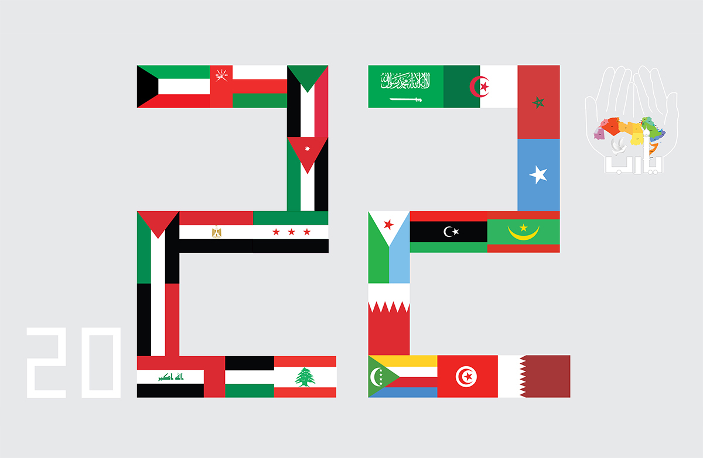

<!-- Image Map Generated by http://www.image-map.net/ -->

<audio id="fire" src="fire.mp3" preload="auto"></audio>

<script>
    function fire() {
        var audio = document.getElementById("fire");

        if (audio.duration > 0 && !audio.paused) {
            audio.pause();
            audio.currentTime = 0;
        } else {
            audio.play();
        }
    }
 
</script>
<map name="image-map">
  
    <area target="_blank" alt="" title="" href="https://ar.wikipedia.org/wiki/%D8%A7%D9%84%D9%83%D9%88%D9%8A%D8%AA"
        coords="233,112,359,185" shape="rect">

                    <area target="_blank" alt="" title="" href="" onclick="javascript:f6(); return false;" coords="971,101,1182,311"
        shape="rect">
</map>
